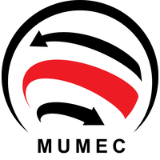

MuMec Inc.
Highlights:
- Built, programmed, and tested a custom hearing aid
- Extensive hardware validation of chipset
- Full-stack board bring-up, (hardware, firmware, software)
- Bluetooth Speech-To-Text using an open-source codebase
- Hand-soldering (0402) and reflow soldering (0201, BGA)
What I Accomplished: In this 10-week internship, I built, programmed, and tested a custom hearing aid device. Most details are proprietary (as are the cool pictures I have), but as an overview, I worked on several aspects of the project: I fine-tuned the DSP parameters of the IC to ensure optimal performance for various operating conditions. Along the way, I validated the core chipset extensively using test equipment and a development board. Since I was the only person working on this project, I completed full-stack board bring-up, including the hardware, firmware and software components of the project. As a secondary feature for the hearing aid, I laid the groundwork for Bluetooth Speech-To-Text capabilities using an open-source codebase. In the process of hardware manufacturing and debugging, I did a lot of hand-soldering and reflow soldering, spending nearly 10 hours a week in front of the iron and fume extractor. I performed precision hand-soldering (0402-sized components) and learned reflow soldering for smaller (0201) components and ball-grid arrays (BGA).
 Motivation: The development of a next-gen, hyper-performant hearing aid is necessary, as the market is shifting its focus to certain key areas, such as dealing with increased algorithmic complexity, enabling more powerful chips in smaller packages, and incorporating firmware-over-the-air technologies. But hearing aids as they exist now are already quite effective; introducing fundamentally unique features, such as what I worked on, could signal a paradigm-shift in education-based applications, and this is where I focused a lot of my energies. I'd also worked on a project with a similar focus for a hackathon, so it aligned quite well with my background and expertise. MuMec is still continuing this project, but for details on the background and market research that motivated me to dive into this project, see here.
ATX Networks
Highlights:
- Full Suite of Hardware Test Equipment
- Integrate Excel Solver + Python to Otimize dDesign Process: ~3 days -> mere minutes
- Synchronize Company Documents (BOMs, proposals, inventory, etc.)
Background: This internship sparked my passion for electrical engineering specifically, as opposed to physics or math as core disciplines. My first week, I shadowed the VP of Engineering and lab technicians as they used hardware test equipment (polarizers, oscilloscopes, function generators, spectrum analyzers, and more) to evaluate the performance of their hardware units. By the second week, I was collecting and sometimes even evaluating data myself from these units.
Project 1: Network Model Optimization: The middle chunk of my internship constitued the largest and most technically involved part; optimizing an optical network performance model. ATX had an Excel program that they used to construct the telecom solutions for their clients. The design engineer would manually alter a whole host of parameters; the channel wavelengths, the distances between units, the power gain at each stage, and more. The ultimate goal was to optimize the signal-to-noise ratio (SNR). I wasn't originally assigned to work onthis project, but took the initiative to request work on the rather open-ended task of optimizing this design process. Certainly, there had to be a better way to carry out a paremeter sweep for each variable to optimize the network.
I ended up using a combination of Excel's Solver Add-on and python scripting to decrease the design phase from a matter to days to mere minutes. The scripting process was effectively a hill-climbing algorithm that saved the current optimal stage and intelligently decided what set of parameter variables to test next. The results were astounding; after running the program with initial constraints, the design engineer only had to spend about an hour fine-tuning and double-checking the result. This project significantly optimized a serious bottleneck in the company's design phase.
Project 2: Interdepartment Synching Lastly, I was asked to help integrate the information that Sales and Operations used into a comprehensive, efficient platform to avoid miscommunication (Sales making promises that Ops couldn't possibly deliver.) I integrated Excel, Github, and Salesforce to arrive at a solution wherein all bills-of-materials (BOMS), forecast proposals, inventory documents, and more were synchronized in a single workflow that everyone started to use (no more copies of the same document floating around at different times). This greatly streamlined the communications between two important departments in the company and also helped reduce lead-times for ordering parts.
Juni Learning Remote CS Instructor (Sp19 - Fa19)
Highlights:
- 250 hours teaching USACO Bronze, Python 1/2/3, Java (AP CS + Advanced)
- Custom Teaching Materials for Visualization
- Designed Scripting Projects
In total, I worked about 250 hours in the span of 7 months in my employment under Juni Learning.